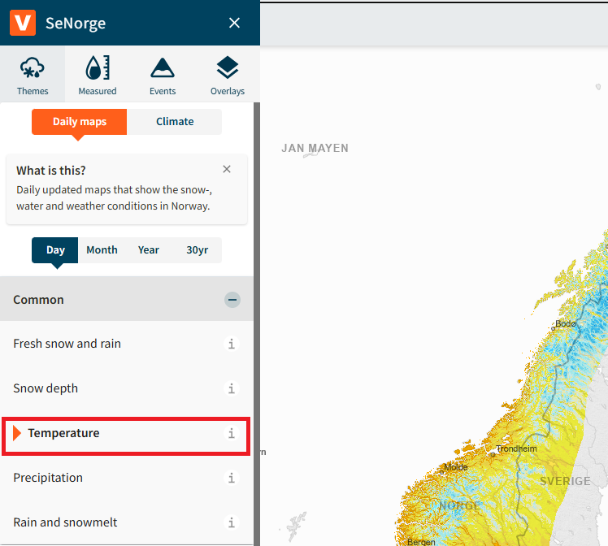
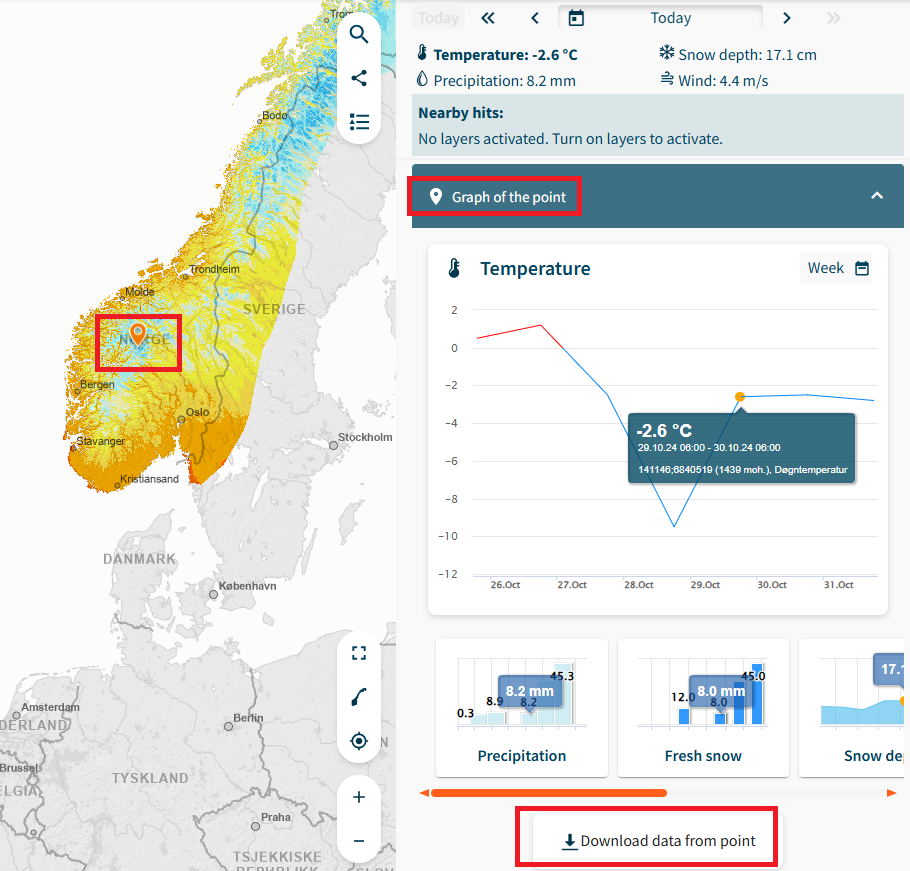
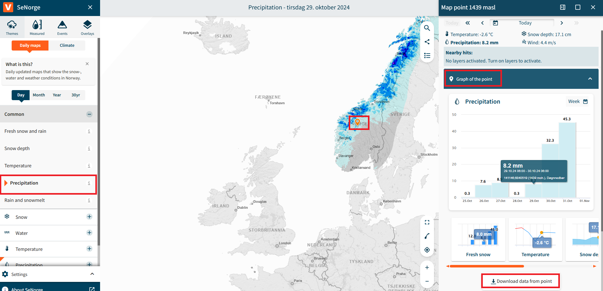
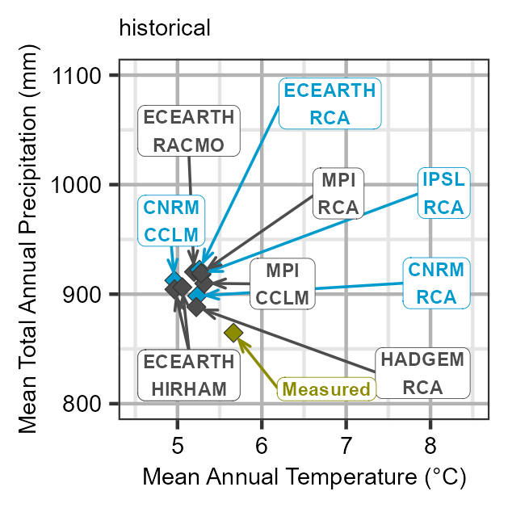
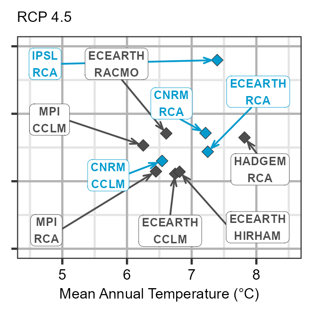
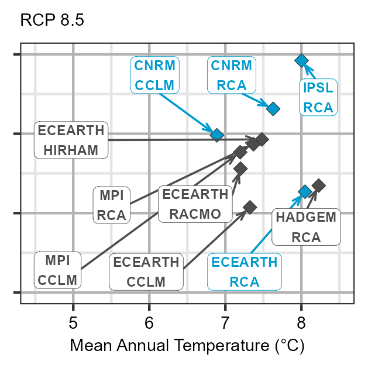
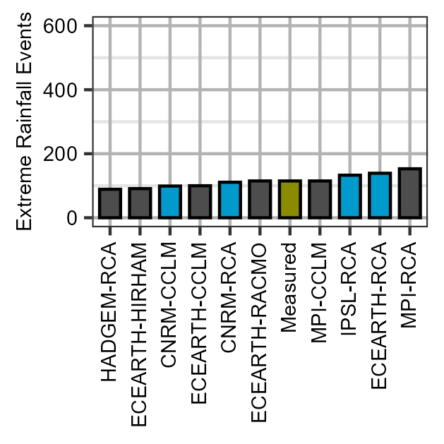
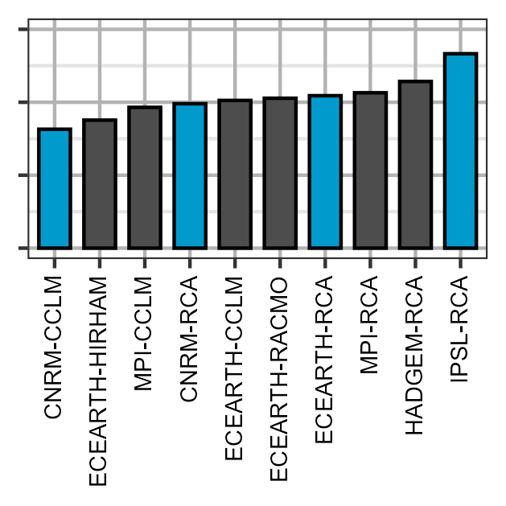
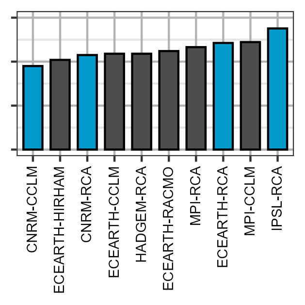

Author: Moritz Shore
Date: 01.06.2022
Introduction
This tutorial will show you how to create Thermopluviograms and Extreme rainfall plots using climate data from the Norwegian climate service and observed data from SeNorge. To get started, we will grab data from SeNorge.
SeNorge
- Go to senorge.no, from the side menu, select themes > daily maps > temperature

- Select the point on interest on the map, then select “Graph of the point” and then download data from the point

- Perform the same for Precipitation:

That concludes the data acquisition part from SeNorge. Of course, you can source your observed data from where ever you please and use it in stead of SeNorge, if you match the format.
NVE
Our climate data will be sourced from NVE’s Klima service cente
Go to https://nedlasting.nve.no/klimadata/kss (DEPRECATED)
Nevermind, that has been discontinued, instead go here: https://thredds.met.no/thredds/catalog/KSS/Klima_i_Norge_2100/utgave2015/catalog.html
It seems like getting this data has become a lot harder now, and perhaps needs a re-anylsis v3 type solutions.. for now the tutorial will continue with our example data, and it is up to you to manage the download for your location (for now).
Workflow
For this example, we will download example data from a GitLab Repo:
download.file(url = "https://gitlab.nibio.no/moritzshore/example-files/-/raw/main/thermopluviograms/Climate_Data.zip",
destfile = "Climate_Data.zip")
unzip("Climate_Data.zip",
exdir = ".")Now we can generate the Thermopluviograms
thermopluviogram(
modelled_climate = "Climate_Data/Modelled/",
observed_pr = "Climate_Data/Observed/senorge_pr.csv",
observed_tm = "Climate_Data/Observed/senorge_temp.csv",
outpath = "../man/figures",
location = "Aas",
chosen_model_runs = c("CNRM-CCLM", "CNRM-RCA", "ECEARTH-RCA", "IPSL-RCA"),
ref_startdate = "1971-01-01",
ref_enddate = "2005-12-31",
obs_startdate = "2041-01-01",
obs_enddate = "2070-12-31",
left_yaxis_only = T,
fixed_axis = T,
verbose = T
)
#> miljo🌿tools thermopluviogram >> generating thermopluviograms...
#> ...for period 2041-01-01 to 2070-12-31
#> ...with a reference period from 2005-12-31 to 1971-01-01
#> ...for location named Aas
#> ...using modelled data from Climate_Data/Modelled/
#> ...and observed precipitation data from Climate_Data/Observed/senorge_pr.csv
#> ...and observed temperature data from Climate_Data/Observed/senorge_temp.csv
#> ...and generating for the experiments hist, rcp45, rcp85
#> ...with an x axis range from 4.5 to 8.5 labelled: Mean Annual Temperature (°C)
#> ...with a y axis range from 800 to 1100 and plotting only the leftmost label? TRUE
#> ...using a font size of 7
#> ...with a fixed axis? TRUE
#> ...highlighting models: CNRM-CCLM, CNRM-RCA, ECEARTH-RCA, IPSL-RCA
#> ...and generating files here ../man/figures
#> miljo🌿tools thermopluviogram >> importing data...
#> miljo🌿tools thermopluviogram >> loading modelled data from Climate_Data/Modelled/
#> miljo🌿tools thermopluviogram >> generating property matrix...
#> miljo🌿tools thermopluviogram >> post-processing modelled climate
#> miljo🌿tools thermopluviogram >> loading observed precipitation data from Climate_Data/Observed/senorge_pr.csv
#> miljo🌿tools thermopluviogram >> loading observed temperature data from Climate_Data/Observed/senorge_temp.csv
#> miljo🌿tools thermopluviogram >> post-processing observed data
#> miljo🌿tools thermopluviogram >> merging observed and modelled data
#> miljo🌿tools thermopluviogram >> calculating statisics...
#> miljo🌿tools thermopluviogram >> generating plots...
#> miljo🌿tools thermopluviogram >> generating thermopluviogram for experiment historical
#> miljo🌿tools thermopluviogram >> saving thermopluviogram tpg_Aas_hist_71-05_41-70.png
#> 0.50s elapsed for 509310 iterations, 14 overlaps. Consider increasing 'max.time'.
#> miljo🌿tools thermopluviogram >> generating exetreme rain plot for experiment hist
#> miljo🌿tools thermopluviogram >> saving extreme rain plot xtreme_rain_Aas_hist_71-05_41-70.png
#> miljo🌿tools thermopluviogram >> generating thermopluviogram for experiment RCP 4.5
#> miljo🌿tools thermopluviogram >> saving thermopluviogram tpg_Aas_rcp45_71-05_41-70.png
#> 0.50s elapsed for 795920 iterations, 3 overlaps. Consider increasing 'max.time'.
#> miljo🌿tools thermopluviogram >> generating exetreme rain plot for experiment rcp45
#> miljo🌿tools thermopluviogram >> saving extreme rain plot xtreme_rain_Aas_rcp45_71-05_41-70.png
#> miljo🌿tools thermopluviogram >> generating thermopluviogram for experiment RCP 8.5
#> miljo🌿tools thermopluviogram >> saving thermopluviogram tpg_Aas_rcp85_71-05_41-70.png
#> 0.50s elapsed for 696410 iterations, 8 overlaps. Consider increasing 'max.time'.
#> miljo🌿tools thermopluviogram >> generating exetreme rain plot for experiment rcp85
#> miljo🌿tools thermopluviogram >> saving extreme rain plot xtreme_rain_Aas_rcp85_71-05_41-70.png
#> miljo🌿tools thermopluviogram >> plots have been saved to ../man/figures
#> [1] "../man/figures"Plots
knitr::include_graphics("../man/figures/tpg_Aas_hist_71-05_41-70.png")
knitr::include_graphics("../man/figures/tpg_Aas_rcp45_71-05_41-70.png")
knitr::include_graphics("../man/figures/tpg_Aas_rcp85_71-05_41-70.png")
knitr::include_graphics("../man/figures/xtreme_rain_Aas_hist_71-05_41-70.png")
knitr::include_graphics("../man/figures/xtreme_rain_Aas_rcp45_71-05_41-70.png")
knitr::include_graphics("../man/figures/xtreme_rain_Aas_rcp85_71-05_41-70.png")
Cleanup
file.remove("Climate_Data.zip")
#> [1] TRUE
unlink("Climate_Data/", recursive = T)